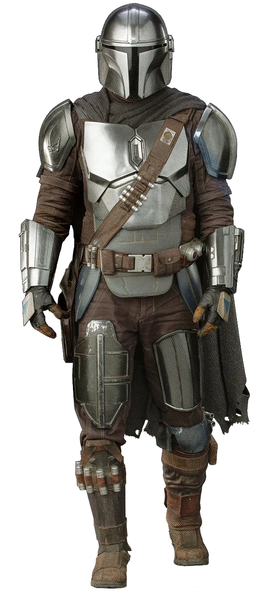

Din Jarin "El Mandaloriano"

Historia
Din Jarin,es un Huerfano adoptado por los Mandalorianos despues de que las tropas separatistas arrasaran su planeta Aq Vetian ,en tiempos de despues de la explosion de la estrella de la muerte,Din Jarin,conocido como El Mandaloriano es uno de los mejores Cazarrecompensas de los tiempos de la nueva republica. Din Jarin recibiria un encargo de entregar a un objetivo muy especial para los remanentes imperiales de Nevarro con la unica descripcion de que el objetivo tiene 50 años,Din Jarin llega a Tatooine a por el objetivo sin saver que en realidad es niño,pero al ser de la misma raza que el mestro yoda, para ellos 50 años sigen siendo jovenes,Din Jarin decide entregalo,pero al rato se arrepiente y decide volver a por el porque el no queria que ese niño sufriera como sufrio el en su infancia, una vez rescatado el niño por segunda vez,Din se convierte en el objetivo mas buscado por otros Cazarrecompensas y vive protegiendo al niño de Cazarrecompensas y remanentes imperiales.
Din en busca de encontrar un lugar seguro para el niño,le lleva ante una Jedi,Ahsoka Tano,la cual le dice que lleve a Grogu a unas antiguas ruinas jedi.Al llegar allí y esperar a que Grogu haga lo suyo,Din,ve llegar otra nave y aterrizar a pocos metros suyos,justo en ese momento Grogu empieza a ahecr su ritual jedi y no se puede interrrumpir hasta que acabe,mientras tanto Din va a comprovar que era la nave,de camino a ella se encuentra con su dueño Boba Fett el cual le explica que esta buscando su armadura,mientras discutian unas naves de desembarco del imperio bajan al planeta por el alboroto del ritual de Grogu. Boba aprovecha la situacion para recuperar su armadura y acabar con todos los soldados Imperiales el solo.para cuando grogu ttermino el riutal y Din y Boba se presentavan de una forma mas formal,un destructor imperial destruye la nave de Din Jarin y unos droides de combate bajan de el destructor y secuestran a Grogu. Boba decide ayduar a Din,porque el se a quedado sin nave y necesita ayuda,así que Din reune a varios antiguos amigos para colarse en el destructor y rescatar al niño.
Tras rescatar al niño,Din se lo entrega a Lucke Skywalker,que llego gracias a que se comunicava con la fuerza con grogu,Mientras Din conseguiria una nave nueva y ayudaria a Boba a convertirse en Daimio de tatooine.
Grogu volveria con Din ya que Luke le dio a elegir entre ser un Jedi o estar con Din,ya que un Jedi no puede tener vinculos con nadie ya que los hace inestables y tienden a caer al lado oscuro (como paso con Darth Vader), Din aprovecha para ir con los Mandalorianos que reconozcan a Grogu como huerfano y que Din pueda adoptarlo y ser su mentor
Mejores Azañas
- Unificó a los Mandalorianos
- Derroto al Mof Gideon
- controlo el DarkSaver
Arsenal
| Equipo | Nombre | Descripcion |
|---|---|---|
| Rifle de pulso | Rifel monodisparo que desintegra a su objetivo | |
 |
Pistola Blaster IB-94 | Pistola de baja cadencia pero de potente disparo |
|  | Armadura Mandaloriana de Beskar | Armadura que brinda proteccion a su usuario contra el fuego de blasters ligeros |
| JetPack Phoenix | JetPack Phoenix de Beskar,brinda movilidad,componente fundamental de la armadura Mandaloriana | |
 |
Muñequeras | Brazaletes con todo tipo de arsenal
|
Naves
Razor Crest

Cañonera vieja que no esta dentro de los registros de la nueva republica,ideal para Cazarrecompensas y criminales
Caza de naboo

Caza del planeta Naboo pertenecientes a la flota de la Princesa de naboo